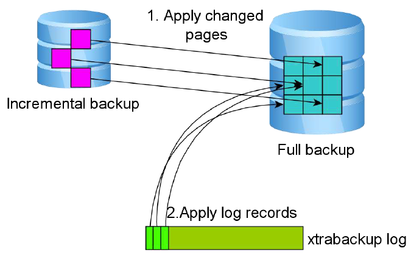

MySQL 备份 Xtrabackup
1. Xtrabackup¶
1.1 介绍¶
Xtrabackup是一个对InnoDB做数据备份的工具，支持在线热备份（备份时候不影响数据读写），是商业备份工作InnoDB hotbackup的一个很好的替代品。
1.2 特点¶
- 无需停止数据库进行InnoDB热备
- 增量备份MySQL
- 流压缩到传输到其他服务器
- 能比较容易的创建主从同步
- 备份MySQL时不会增大服务器负载
1.3 备份方式¶
- 热备份：读写不受影响（mysqldump → innodb）
- 温备份：仅可以执行读操作（mysqldump → myisam）
- 冷备份：离线备份，读写都不可用
- 逻辑备份：讲数据导出文本文件中(mysqldump)
- 物理备份：讲数据文件拷贝（xtrabackup，mysqlhotcopy）
- 完成备份：备份所有数据
- 增量备份：仅备份上次完整备份或者增量备份以来变化的数据
- 差异备份：仅备份上次完整备份以来变化的数据
2. xtrabackup 原理¶
2.1 xtrabackup 备份过程¶
innobackupex备份过程如下图：备份开始时首先会开启一个后台检测进程，实时检测mysql redo的变化，一旦发现redo中有新的日志写入，立刻将日志记入后台日志文件xtrabackup_log中。之后复制innodb的数据文件和系统表空间文件ibdata1，待复制结束后，执行flush tables with read lock操作，复制.frm，MYI，MYD，等文件（执行flush tableswith read lock的目的是为了防止数据表发生DDL操作，并且在这一时刻获得binlog的位置）最后会发出unlock tables，把表设置为可读可写状态，最终停止xtrabackup_log。

2.2 Xtrabackup 全量备份恢复¶
这一阶段会启动xtrabackup内嵌的innodb实例，回放xtrabackup日志xtrabackup_log，将提交的事务信息变更应用到innodb数据/表空间，同时回滚未提交的事务(这一过程类似innodb的实例恢复）。恢复过程如下图：

2.3 Xtrabackup 增量备份原理¶
innobackupex增量备份过程中的"增量"处理，其实主要是相对innodb而言，对myisam和其他存储引擎而言，它仍然是全拷贝(全备份)"。增量"备份的过程主要是通过拷贝innodb中有变更的"页"（这些变更的数据页指的是"页"的LSN大于xtrabackup_checkpoints中给定的LSN）。增量备份是基于全备的，第一次增备的数据必须要基于上一次的全备，之后的每次增备都是基于上一次的增备，最终达到一致性的增备。增量备份的过程如下，和全备的过程很类似，区别仅在第2步。

2.4 Xtrabackup 增量备份恢复¶
和全备恢复类似，也需要两步，一是数据文件的恢复，如图4，这里的数据来源由3部分组成：全备份，增量备份和xtrabackup log。二是对未提交事务的回滚，如图所示

3. xtrabackup 部署¶
3.1 离线安装¶
安装Percona XtraBackup Percona yum资源库
yum install -y \ http://www.percona.com/downloads/percona-release/redhat/0.1-3/percona-release-0.1-3.noarch.rpm yum list|grep percona yum install percona-xtrabackup-22
3.2 检查安装¶
[root@localhost ~]# rpm -qa|grep xtrabackup percona-xtrabackup-22-2.2.13-1.el7.x86_64
3.3 常用参数¶
Xtrabackup中主要包含两个工具：
xtrabackup：是用于热备innodb，xtradb表中数据的工具，不能备份其他类型的表，也不能备份数据表结构；
innobackupex：是将xtrabackup进行封装的perl脚本，提供了备份myisam表的能力。
常用选项: -host 指定主机 --user 指定用户名 --password 指定密码 --port 指定端口 --databases 指定数据库 --incremental 创建增量备份 --incremental-basedir 指定包含完全备份的目录 --incremental-dir 指定包含增量备份的目录 --apply-log 对备份进行预处理操作 一般情况下，在备份完成后，数据尚且不能用于恢复操作，因为备份的数据中可能会包含尚未提交的事务或已经提交但尚未同步至数据文件中的事务。因此，此时数据文件仍处理不一致状态。“准备”的主要作用正是通过回滚未提交的事务及同步已经提交的事务至数据文件也使得数据文件处于一致性状态。 --redo-only 不回滚未提交事务 --copy-back 恢复备份目录 使用innobakupex备份时,其会调用xtrabackup备份所有的InnoDB表,复制所有关于表结构定义的相关文件(.frm)、以及MyISAM、MERGE、CSV和ARCHIVE表的相关文件,同时还会备份触发器和数据库配置信息相关的文件,这些文件会被保存至一个以时间命令的目录中。
`. xtrabackup_checkpoints 备份类型（如完全或增量）、备份状态（如是否已经为prepared状态）和LSN(日志序列号)范围信息;每个InnoDB页(通常为16k大小)都会包含一个日志序列号，即LSN。 LSN是整个数据库系统的系统版本号，每个页面相关的LSN能够表明此页面最近是如何发生改变的。 2. xtrabackup_binlog_info mysql服务器当前正在使用的二进制日志文件及至备份这一刻为止二进制日志事件的位置。 3. xtrabackup_binlog_pos_innodb 二进制日志文件及用于InnoDB或XtraDB表的二进制日志文件的当前position。 4. xtrabackup_binary 备份中用到的xtrabackup的可执行文件； 5. backup-my.cnf 备份命令用到的配置选项信息； 在使用innobackupex进行备份时，还可以使用--no-timestamp选项来阻止命令自动创建一个以时间命名的目录；如此一来，innobackupex命令将会创建一个BACKUP-DIR目录来存储备份数据。
mysql> CREATE USER 'backuser'@'localhost' IDENTIFIED BY 'backuser'; 创建用户 mysql> REVOKE ALL PRIVILEGES,GRANT OPTION FROM 'backuser'@'localhost'; 回收此用户所有权限 mysql> GRANT RELOAD,LOCK TABLES,REPLICATION CLIENT ON *.* TO 'baskuser'@'localhost'; 授权刷新、锁定表、用户查看服务器状态 mysql> FLUSH PRIVILEGES; 刷新授权表
注意
备份过程 :备份时需启动MySQL,恢复时需关闭MySQL,清空mysql数据目录且不能重新初始化,恢复数据后应该立即进行一次完全备份
4. xtrabackup 操作¶
4.1 基于全量的备份与恢复¶
4.1.1 全量备份¶
全量备份与恢复 备份 innobackupex --user=root --password=root --defaults-file=/etc/my.cnf /opt/ 恢复 innobackupex --apply-log /opt/2017-01-05_11-04-55/ innobackupex --copy-back --defaults-file=/etc/my.cnf /opt/2017-01-05_11-04-55/
[root@localhost backup]# mysqladmin -uroot password root
Warning: Using a password on the command line interface can be insecure.
[root@localhost opt]# innobackupex --user=root --password=root --defaults-file=/etc/my.cnf /opt/
InnoDB Backup Utility v1.5.1-xtrabackup; Copyright 2003, 2009 Innobase Oy
and Percona LLC and/or its affiliates 2009-2013. All Rights Reserved.
This software is published under
the GNU GENERAL PUBLIC LICENSE Version 2, June 1991.
Get the latest version of Percona XtraBackup, documentation, and help resources:
http://www.percona.com/xb/p
170105 11:04:55 innobackupex: Executing a version check against the server...
170105 11:04:55 innobackupex: Connecting to MySQL server with DSN 'dbi:mysql:;mysql_read_default_file=/etc/my.cnf;mysql_read_default_group=xtrabackup' as 'root' (using password: YES).
170105 11:04:55 innobackupex: Connected to MySQL server
170105 11:04:55 innobackupex: Done.
170105 11:04:55 innobackupex: Connecting to MySQL server with DSN 'dbi:mysql:;mysql_read_default_file=/etc/my.cnf;mysql_read_default_group=xtrabackup' as 'root' (using password: YES).
170105 11:04:55 innobackupex: Connected to MySQL server
170105 11:04:55 innobackupex: Starting the backup operation
IMPORTANT: Please check that the backup run completes successfully.
At the end of a successful backup run innobackupex
prints "completed OK!".
innobackupex: Using server version 5.6.35-log
innobackupex: Created backup directory /opt/2017-01-05_11-04-55
170105 11:04:55 innobackupex: Starting ibbackup with command: xtrabackup --defaults-file="/etc/my.cnf" --defaults-group="mysqld" --backup --suspend-at-end --target-dir=/opt/2017-01-05_11-04-55 --innodb_log_file_size="50331648" --innodb_data_file_path="ibdata1:12M:autoextend" --tmpdir=/tmp --extra-lsndir='/tmp'
innobackupex: Waiting for ibbackup (pid=25098) to suspend
innobackupex: Suspend file '/opt/2017-01-05_11-04-55/xtrabackup_suspended_2'
xtrabackup version 2.2.13 based on MySQL server 5.6.24 Linux (x86_64) (revision id: 70f4be3)
xtrabackup: uses posix_fadvise().
xtrabackup: cd to /var/lib/mysql
xtrabackup: open files limit requested 0, set to 1024
xtrabackup: using the following InnoDB configuration:
xtrabackup: innodb_data_home_dir = ./
xtrabackup: innodb_data_file_path = ibdata1:12M:autoextend
xtrabackup: innodb_log_group_home_dir = ./
xtrabackup: innodb_log_files_in_group = 2
xtrabackup: innodb_log_file_size = 50331648
>> log scanned up to (1666902)
xtrabackup: Generating a list of tablespaces
[01] Copying ./ibdata1 to /opt/2017-01-05_11-04-55/ibdata1
[01] ...done
[01] Copying ./mysql/innodb_table_stats.ibd to /opt/2017-01-05_11-04-55/mysql/innodb_table_stats.ibd
[01] ...done
[01] Copying ./mysql/innodb_index_stats.ibd to /opt/2017-01-05_11-04-55/mysql/innodb_index_stats.ibd
[01] ...done
[01] Copying ./mysql/slave_relay_log_info.ibd to /opt/2017-01-05_11-04-55/mysql/slave_relay_log_info.ibd
[01] ...done
[01] Copying ./mysql/slave_master_info.ibd to /opt/2017-01-05_11-04-55/mysql/slave_master_info.ibd
[01] ...done
[01] Copying ./mysql/slave_worker_info.ibd to /opt/2017-01-05_11-04-55/mysql/slave_worker_info.ibd
[01] ...done
[01] Copying ./leco/student.ibd to /opt/2017-01-05_11-04-55/leco/student.ibd
[01] ...done
>> log scanned up to (1666902)
xtrabackup: Creating suspend file '/opt/2017-01-05_11-04-55/xtrabackup_suspended_2' with pid '25098'
170105 11:04:57 innobackupex: Continuing after ibbackup has suspended
170105 11:04:57 innobackupex: Executing FLUSH NO_WRITE_TO_BINLOG TABLES...
>> log scanned up to (1666902)
170105 11:04:57 innobackupex: Executing FLUSH TABLES WITH READ LOCK...
170105 11:04:57 innobackupex: All tables locked and flushed to disk
170105 11:04:57 innobackupex: Starting to backup non-InnoDB tables and files
innobackupex: in subdirectories of '/var/lib/mysql/'
innobackupex: Backing up files '/var/lib/mysql//mysql/*.{frm,isl,MYD,MYI,MAD,MAI,MRG,TRG,TRN,ARM,ARZ,CSM,CSV,opt,par}' (74 files)
innobackupex: Backing up file '/var/lib/mysql//leco/db.opt'
innobackupex: Backing up file '/var/lib/mysql//leco/student.frm'
innobackupex: Backing up files '/var/lib/mysql//performance_schema/*.{frm,isl,MYD,MYI,MAD,MAI,MRG,TRG,TRN,ARM,ARZ,CSM,CSV,opt,par}' (53 files)
170105 11:04:58 innobackupex: Finished backing up non-InnoDB tables and files
170105 11:04:58 innobackupex: Executing FLUSH NO_WRITE_TO_BINLOG ENGINE LOGS...
170105 11:04:58 innobackupex: Waiting for log copying to finish
xtrabackup: The latest check point (for incremental): '1666902'
xtrabackup: Stopping log copying thread.
.>> log scanned up to (1666902)
xtrabackup: Creating suspend file '/opt/2017-01-05_11-04-55/xtrabackup_log_copied' with pid '25098'
xtrabackup: Transaction log of lsn (1666902) to (1666902) was copied.
170105 11:04:59 innobackupex: All tables unlocked
innobackupex: Backup created in directory '/opt/2017-01-05_11-04-55'
innobackupex: MySQL binlog position: filename 'mysql-bin.000001', position 430
170105 11:04:59 innobackupex: Connection to database server closed
170105 11:04:59 innobackupex: completed OK!
语法解释
innobackupex --user=root --password=root --defaults-file=/etc/my.cnf /opt/ 语法解释说明： 1. --user=root 指定备份的用户 2. --password=root指定备份用户的密码 3. --defaults-file=/etc/my.cnf 指定的备份数据的配置文件 4. /opt/ 指定备份后的数据保存路径
说明
在备份的同时，备份数据会在备份目录下创建一个以当前时间为名字的目录存放备份文件。 各文件说明： （1）xtrabackup_checkpoints —-备份类型（如完全或增量）、备份状态（如是否已经没prepare状态）和LSN（日志序列号）范围信息 每个InnoDB页（通常大小为16K）都会包含一个日志序列号，即LSN，LSN是整个数据库系统的系统版本号，每个页面相关的LSN能够表名此页面最近是如何发生改变的。 backup_type = full-backuped from_lsn = 0 to_lsn = 2097320 last_lsn = 2097320 compact = 0 （2）xtrabackup_binlog_info —-mysql服务器当前正在使用的二进制日志及备份这一刻为二进制日志事件的位置 （3）xtrabackup_pos_innodb —-二进制日志及用于InnoDB或XtraDB表的二进制日志的当前posistion。 （4）xtrabackup_binary —-备份中用到的xtrabackup的可执行文件 （5）backup-my.cnf —- 备份命令用到的配置选项信息； 在使用innobackupex命令备份时吗还可以使用–no-timestamp选项来阻止命令自动创建一个以时间命名的目录 innobackupex命令将会创建一个BACKUP-DIR目录来存储备份数据 还需要注意，备份数据库的用户需要具有相对应的权限，如果要使用一个最小权限的用户进行备份可以使用以下参数： mysql> GRANT RELOAD, LOCK TABLES, REPLICATION CLIENT ON *.* TO ‘bkpuser’@’localhost’; mysql> FLUSH PRIVILEGES;
在使用innobackupex进行备份
[root@localhost opt]# ll /opt/ total 4 drwxr-xr-x. 5 root root 4096 Jan 5 11:04 2017-01-05_11-04-55 [root@localhost opt]# systemctl stop mysql [root@localhost opt]# grep datadir /etc/my.cnf datadir=/var/lib/mysql [root@localhost opt]# cd /var/lib/mysql [root@localhost mysql]# rm -rf *
4.1.2 全量备份恢复¶
准备一个完整备份（prepare）
在使用innobackup进行备份时候，还可以使用--no-timestamp选项来阻止命令自动创建一个时间命名的目录。如此一来，innobackupex命令将会创建一个BACKUP-DIR目录来储存备份数据在一般情况下，在备份完成后，数据且尚不能用于恢复操作，因为备份的数据中可能包含尚未提交的事物或者已经提交但尚未同步至数据文件中的事物，因此此时数据文件仍然处于不一致状态，准备的主要作用正是通过回滚未提交的事物及同步已经提交的事物至数据文件也使得数据文件处于一致状态。 Innobackupex，命令的--apply-log选项可以实现上述功能。
[root@localhost mysql]# innobackupex --apply-log /opt/2017-01-05_11-04-55/
InnoDB Backup Utility v1.5.1-xtrabackup; Copyright 2003, 2009 Innobase Oy
and Percona LLC and/or its affiliates 2009-2013. All Rights Reserved.
This software is published under
the GNU GENERAL PUBLIC LICENSE Version 2, June 1991.
Get the latest version of Percona XtraBackup, documentation, and help resources:
http://www.percona.com/xb/p
170105 11:19:14 innobackupex: Starting the apply-log operation
IMPORTANT: Please check that the apply-log run completes successfully.
At the end of a successful apply-log run innobackupex
prints "completed OK!".
170105 11:19:14 innobackupex: Starting ibbackup with command: xtrabackup --defaults-file="/opt/2017-01-05_11-04-55/backup-my.cnf" --defaults-group="mysqld" --prepare --target-dir=/opt/2017-01-05_11-04-55
xtrabackup version 2.2.13 based on MySQL server 5.6.24 Linux (x86_64) (revision id: 70f4be3)
xtrabackup: cd to /opt/2017-01-05_11-04-55
xtrabackup: This target seems to be not prepared yet.
xtrabackup: xtrabackup_logfile detected: size=2097152, start_lsn=(1666902)
xtrabackup: using the following InnoDB configuration for recovery:
xtrabackup: innodb_data_home_dir = ./
xtrabackup: innodb_data_file_path = ibdata1:12M:autoextend
xtrabackup: innodb_log_group_home_dir = ./
xtrabackup: innodb_log_files_in_group = 1
xtrabackup: innodb_log_file_size = 2097152
xtrabackup: using the following InnoDB configuration for recovery:
xtrabackup: innodb_data_home_dir = ./
xtrabackup: innodb_data_file_path = ibdata1:12M:autoextend
xtrabackup: innodb_log_group_home_dir = ./
xtrabackup: innodb_log_files_in_group = 1
xtrabackup: innodb_log_file_size = 2097152
xtrabackup: Starting InnoDB instance for recovery.
xtrabackup: Using 104857600 bytes for buffer pool (set by --use-memory parameter)
InnoDB: Using atomics to ref count buffer pool pages
InnoDB: The InnoDB memory heap is disabled
InnoDB: Mutexes and rw_locks use GCC atomic builtins
InnoDB: Memory barrier is not used
InnoDB: Compressed tables use zlib 1.2.7
InnoDB: Using CPU crc32 instructions
InnoDB: Initializing buffer pool, size = 100.0M
InnoDB: Completed initialization of buffer pool
InnoDB: Highest supported file format is Barracuda.
InnoDB: The log sequence numbers 1663530 and 1663530 in ibdata files do not match the log sequence number 1666902 in the ib_logfiles!
InnoDB: Database was not shutdown normally!
InnoDB: Starting crash recovery.
InnoDB: Reading tablespace information from the .ibd files...
InnoDB: Restoring possible half-written data pages
InnoDB: from the doublewrite buffer...
InnoDB: Last MySQL binlog file position 0 1451, file name mysql-bin.000001
InnoDB: 128 rollback segment(s) are active.
InnoDB: Waiting for purge to start
InnoDB: 5.6.24 started; log sequence number 1666902
[notice (again)]
If you use binary log and don't use any hack of group commit,
the binary log position seems to be:
InnoDB: Last MySQL binlog file position 0 1451, file name mysql-bin.000001
xtrabackup: starting shutdown with innodb_fast_shutdown = 1
InnoDB: FTS optimize thread exiting.
InnoDB: Starting shutdown...
InnoDB: Shutdown completed; log sequence number 1666912
170105 11:19:16 innobackupex: Restarting xtrabackup with command: xtrabackup --defaults-file="/opt/2017-01-05_11-04-55/backup-my.cnf" --defaults-group="mysqld" --prepare --target-dir=/opt/2017-01-05_11-04-55
for creating ib_logfile*
xtrabackup version 2.2.13 based on MySQL server 5.6.24 Linux (x86_64) (revision id: 70f4be3)
xtrabackup: cd to /opt/2017-01-05_11-04-55
xtrabackup: This target seems to be already prepared.
xtrabackup: notice: xtrabackup_logfile was already used to '--prepare'.
xtrabackup: using the following InnoDB configuration for recovery:
xtrabackup: innodb_data_home_dir = ./
xtrabackup: innodb_data_file_path = ibdata1:12M:autoextend
xtrabackup: innodb_log_group_home_dir = ./
xtrabackup: innodb_log_files_in_group = 2
xtrabackup: innodb_log_file_size = 50331648
xtrabackup: using the following InnoDB configuration for recovery:
xtrabackup: innodb_data_home_dir = ./
xtrabackup: innodb_data_file_path = ibdata1:12M:autoextend
xtrabackup: innodb_log_group_home_dir = ./
xtrabackup: innodb_log_files_in_group = 2
xtrabackup: innodb_log_file_size = 50331648
xtrabackup: Starting InnoDB instance for recovery.
xtrabackup: Using 104857600 bytes for buffer pool (set by --use-memory parameter)
InnoDB: Using atomics to ref count buffer pool pages
InnoDB: The InnoDB memory heap is disabled
InnoDB: Mutexes and rw_locks use GCC atomic builtins
InnoDB: Memory barrier is not used
InnoDB: Compressed tables use zlib 1.2.7
InnoDB: Using CPU crc32 instructions
InnoDB: Initializing buffer pool, size = 100.0M
InnoDB: Completed initialization of buffer pool
InnoDB: Setting log file ./ib_logfile101 size to 48 MB
InnoDB: Setting log file ./ib_logfile1 size to 48 MB
InnoDB: Renaming log file ./ib_logfile101 to ./ib_logfile0
InnoDB: New log files created, LSN=1666912
InnoDB: Highest supported file format is Barracuda.
InnoDB: 128 rollback segment(s) are active.
InnoDB: Waiting for purge to start
InnoDB: 5.6.24 started; log sequence number 1667084
[notice (again)]
If you use binary log and don't use any hack of group commit,
the binary log position seems to be:
InnoDB: Last MySQL binlog file position 0 1451, file name mysql-bin.000001
xtrabackup: starting shutdown with innodb_fast_shutdown = 1
InnoDB: FTS optimize thread exiting.
InnoDB: Starting shutdown...
InnoDB: Shutdown completed; log sequence number 1667094
170105 11:19:18 innobackupex: completed OK!
内存指定
在实现准备过程中，innobackupex通常还可以使用--user-memory选项来指定其可以使用的内存大小。默认通常是100M，如果有足够的内存使用，可以多划分一些给内存准备prepare，以提高其完成速度。
从一个完整备份中恢复数据.
Innobackupex命令的--copy-back选项用于执行恢复操作，其通过复制所有的数据相关文件到mysql服务器的DATADIR目录来执行恢复过程，innobackupex通过backup-my.cnf来获取DATADIR目录相关信息。
开始恢复
[root@localhost mysql]# innobackupex --copy-back --defaults-file=/etc/my.cnf /opt/2017-01-05_11-04-55/
InnoDB Backup Utility v1.5.1-xtrabackup; Copyright 2003, 2009 Innobase Oy
and Percona LLC and/or its affiliates 2009-2013. All Rights Reserved.
This software is published under
the GNU GENERAL PUBLIC LICENSE Version 2, June 1991.
Get the latest version of Percona XtraBackup, documentation, and help resources:
http://www.percona.com/xb/p
170105 11:26:34 innobackupex: Starting the copy-back operation
IMPORTANT: Please check that the copy-back run completes successfully.
At the end of a successful copy-back run innobackupex
prints "completed OK!".
innobackupex: Starting to copy files in '/opt/2017-01-05_11-04-55'
innobackupex: back to original data directory '/var/lib/mysql'
innobackupex: Copying '/opt/2017-01-05_11-04-55/xtrabackup_info' to '/var/lib/mysql/xtrabackup_info'
innobackupex: Copying '/opt/2017-01-05_11-04-55/xtrabackup_binlog_pos_innodb' to '/var/lib/mysql/xtrabackup_binlog_pos_innodb'
innobackupex: Creating directory '/var/lib/mysql/mysql'
innobackupex: Copying '/opt/2017-01-05_11-04-55/mysql/innodb_table_stats.ibd' to '/var/lib/mysql/mysql/innodb_table_stats.ibd'
innobackupex: Copying '/opt/2017-01-05_11-04-55/mysql/innodb_index_stats.ibd' to '/var/lib/mysql/mysql/innodb_index_stats.ibd'
innobackupex: Copying '/opt/2017-01-05_11-04-55/mysql/slave_relay_log_info.ibd' to '/var/lib/mysql/mysql/slave_relay_log_info.ibd'
innobackupex: Copying '/opt/2017-01-05_11-04-55/mysql/slave_master_info.ibd' to '/var/lib/mysql/mysql/slave_master_info.ibd'
innobackupex: Copying '/opt/2017-01-05_11-04-55/mysql/slave_worker_info.ibd' to '/var/lib/mysql/mysql/slave_worker_info.ibd'
innobackupex: Copying '/opt/2017-01-05_11-04-55/mysql/db.frm' to '/var/lib/mysql/mysql/db.frm'
innobackupex: Copying '/opt/2017-01-05_11-04-55/mysql/db.MYI' to '/var/lib/mysql/mysql/db.MYI'
innobackupex: Copying '/opt/2017-01-05_11-04-55/mysql/db.MYD' to '/var/lib/mysql/mysql/db.MYD'
innobackupex: Copying '/opt/2017-01-05_11-04-55/mysql/user.frm' to '/var/lib/mysql/mysql/user.frm'
innobackupex: Copying '/opt/2017-01-05_11-04-55/mysql/user.MYI' to '/var/lib/mysql/mysql/user.MYI'
innobackupex: Copying '/opt/2017-01-05_11-04-55/mysql/user.MYD' to '/var/lib/mysql/mysql/user.MYD'
innobackupex: Copying '/opt/2017-01-05_11-04-55/mysql/func.frm' to '/var/lib/mysql/mysql/func.frm'
innobackupex: Copying '/opt/2017-01-05_11-04-55/mysql/func.MYI' to '/var/lib/mysql/mysql/func.MYI'
innobackupex: Copying '/opt/2017-01-05_11-04-55/mysql/func.MYD' to '/var/lib/mysql/mysql/func.MYD'
innobackupex: Copying '/opt/2017-01-05_11-04-55/mysql/plugin.frm' to '/var/lib/mysql/mysql/plugin.frm'
innobackupex: Copying '/opt/2017-01-05_11-04-55/mysql/plugin.MYI' to '/var/lib/mysql/mysql/plugin.MYI'
innobackupex: Copying '/opt/2017-01-05_11-04-55/mysql/plugin.MYD' to '/var/lib/mysql/mysql/plugin.MYD'
innobackupex: Copying '/opt/2017-01-05_11-04-55/mysql/servers.frm' to '/var/lib/mysql/mysql/servers.frm'
innobackupex: Copying '/opt/2017-01-05_11-04-55/mysql/servers.MYI' to '/var/lib/mysql/mysql/servers.MYI'
innobackupex: Copying '/opt/2017-01-05_11-04-55/mysql/servers.MYD' to '/var/lib/mysql/mysql/servers.MYD'
innobackupex: Copying '/opt/2017-01-05_11-04-55/mysql/tables_priv.frm' to '/var/lib/mysql/mysql/tables_priv.frm'
innobackupex: Copying '/opt/2017-01-05_11-04-55/mysql/tables_priv.MYI' to '/var/lib/mysql/mysql/tables_priv.MYI'
innobackupex: Copying '/opt/2017-01-05_11-04-55/mysql/tables_priv.MYD' to '/var/lib/mysql/mysql/tables_priv.MYD'
innobackupex: Copying '/opt/2017-01-05_11-04-55/mysql/columns_priv.frm' to '/var/lib/mysql/mysql/columns_priv.frm'
innobackupex: Copying '/opt/2017-01-05_11-04-55/mysql/columns_priv.MYI' to '/var/lib/mysql/mysql/columns_priv.MYI'
innobackupex: Copying '/opt/2017-01-05_11-04-55/mysql/columns_priv.MYD' to '/var/lib/mysql/mysql/columns_priv.MYD'
innobackupex: Copying '/opt/2017-01-05_11-04-55/mysql/help_topic.frm' to '/var/lib/mysql/mysql/help_topic.frm'
innobackupex: Copying '/opt/2017-01-05_11-04-55/mysql/help_topic.MYI' to '/var/lib/mysql/mysql/help_topic.MYI'
innobackupex: Copying '/opt/2017-01-05_11-04-55/mysql/help_topic.MYD' to '/var/lib/mysql/mysql/help_topic.MYD'
innobackupex: Copying '/opt/2017-01-05_11-04-55/mysql/help_category.frm' to '/var/lib/mysql/mysql/help_category.frm'
innobackupex: Copying '/opt/2017-01-05_11-04-55/mysql/help_category.MYI' to '/var/lib/mysql/mysql/help_category.MYI'
innobackupex: Copying '/opt/2017-01-05_11-04-55/mysql/help_category.MYD' to '/var/lib/mysql/mysql/help_category.MYD'
innobackupex: Copying '/opt/2017-01-05_11-04-55/mysql/help_relation.frm' to '/var/lib/mysql/mysql/help_relation.frm'
innobackupex: Copying '/opt/2017-01-05_11-04-55/mysql/help_relation.MYI' to '/var/lib/mysql/mysql/help_relation.MYI'
innobackupex: Copying '/opt/2017-01-05_11-04-55/mysql/help_relation.MYD' to '/var/lib/mysql/mysql/help_relation.MYD'
innobackupex: Copying '/opt/2017-01-05_11-04-55/mysql/help_keyword.frm' to '/var/lib/mysql/mysql/help_keyword.frm'
innobackupex: Copying '/opt/2017-01-05_11-04-55/mysql/help_keyword.MYI' to '/var/lib/mysql/mysql/help_keyword.MYI'
innobackupex: Copying '/opt/2017-01-05_11-04-55/mysql/help_keyword.MYD' to '/var/lib/mysql/mysql/help_keyword.MYD'
innobackupex: Copying '/opt/2017-01-05_11-04-55/mysql/time_zone_name.frm' to '/var/lib/mysql/mysql/time_zone_name.frm'
innobackupex: Copying '/opt/2017-01-05_11-04-55/mysql/time_zone_name.MYI' to '/var/lib/mysql/mysql/time_zone_name.MYI'
innobackupex: Copying '/opt/2017-01-05_11-04-55/mysql/time_zone_name.MYD' to '/var/lib/mysql/mysql/time_zone_name.MYD'
innobackupex: Copying '/opt/2017-01-05_11-04-55/mysql/time_zone.frm' to '/var/lib/mysql/mysql/time_zone.frm'
innobackupex: Copying '/opt/2017-01-05_11-04-55/mysql/time_zone.MYI' to '/var/lib/mysql/mysql/time_zone.MYI'
innobackupex: Copying '/opt/2017-01-05_11-04-55/mysql/time_zone.MYD' to '/var/lib/mysql/mysql/time_zone.MYD'
innobackupex: Copying '/opt/2017-01-05_11-04-55/mysql/time_zone_transition.frm' to '/var/lib/mysql/mysql/time_zone_transition.frm'
innobackupex: Copying '/opt/2017-01-05_11-04-55/mysql/time_zone_transition.MYI' to '/var/lib/mysql/mysql/time_zone_transition.MYI'
innobackupex: Copying '/opt/2017-01-05_11-04-55/mysql/time_zone_transition.MYD' to '/var/lib/mysql/mysql/time_zone_transition.MYD'
innobackupex: Copying '/opt/2017-01-05_11-04-55/mysql/time_zone_transition_type.frm' to '/var/lib/mysql/mysql/time_zone_transition_type.frm'
innobackupex: Copying '/opt/2017-01-05_11-04-55/mysql/time_zone_transition_type.MYI' to '/var/lib/mysql/mysql/time_zone_transition_type.MYI'
innobackupex: Copying '/opt/2017-01-05_11-04-55/mysql/time_zone_transition_type.MYD' to '/var/lib/mysql/mysql/time_zone_transition_type.MYD'
innobackupex: Copying '/opt/2017-01-05_11-04-55/mysql/time_zone_leap_second.frm' to '/var/lib/mysql/mysql/time_zone_leap_second.frm'
innobackupex: Copying '/opt/2017-01-05_11-04-55/mysql/time_zone_leap_second.MYI' to '/var/lib/mysql/mysql/time_zone_leap_second.MYI'
innobackupex: Copying '/opt/2017-01-05_11-04-55/mysql/time_zone_leap_second.MYD' to '/var/lib/mysql/mysql/time_zone_leap_second.MYD'
innobackupex: Copying '/opt/2017-01-05_11-04-55/mysql/proc.frm' to '/var/lib/mysql/mysql/proc.frm'
innobackupex: Copying '/opt/2017-01-05_11-04-55/mysql/proc.MYI' to '/var/lib/mysql/mysql/proc.MYI'
innobackupex: Copying '/opt/2017-01-05_11-04-55/mysql/proc.MYD' to '/var/lib/mysql/mysql/proc.MYD'
innobackupex: Copying '/opt/2017-01-05_11-04-55/mysql/procs_priv.frm' to '/var/lib/mysql/mysql/procs_priv.frm'
innobackupex: Copying '/opt/2017-01-05_11-04-55/mysql/procs_priv.MYI' to '/var/lib/mysql/mysql/procs_priv.MYI'
innobackupex: Copying '/opt/2017-01-05_11-04-55/mysql/procs_priv.MYD' to '/var/lib/mysql/mysql/procs_priv.MYD'
innobackupex: Copying '/opt/2017-01-05_11-04-55/mysql/general_log.frm' to '/var/lib/mysql/mysql/general_log.frm'
innobackupex: Copying '/opt/2017-01-05_11-04-55/mysql/general_log.CSM' to '/var/lib/mysql/mysql/general_log.CSM'
innobackupex: Copying '/opt/2017-01-05_11-04-55/mysql/general_log.CSV' to '/var/lib/mysql/mysql/general_log.CSV'
innobackupex: Copying '/opt/2017-01-05_11-04-55/mysql/slow_log.frm' to '/var/lib/mysql/mysql/slow_log.frm'
innobackupex: Copying '/opt/2017-01-05_11-04-55/mysql/slow_log.CSM' to '/var/lib/mysql/mysql/slow_log.CSM'
innobackupex: Copying '/opt/2017-01-05_11-04-55/mysql/slow_log.CSV' to '/var/lib/mysql/mysql/slow_log.CSV'
innobackupex: Copying '/opt/2017-01-05_11-04-55/mysql/event.frm' to '/var/lib/mysql/mysql/event.frm'
innobackupex: Copying '/opt/2017-01-05_11-04-55/mysql/event.MYI' to '/var/lib/mysql/mysql/event.MYI'
innobackupex: Copying '/opt/2017-01-05_11-04-55/mysql/event.MYD' to '/var/lib/mysql/mysql/event.MYD'
innobackupex: Copying '/opt/2017-01-05_11-04-55/mysql/ndb_binlog_index.frm' to '/var/lib/mysql/mysql/ndb_binlog_index.frm'
innobackupex: Copying '/opt/2017-01-05_11-04-55/mysql/ndb_binlog_index.MYI' to '/var/lib/mysql/mysql/ndb_binlog_index.MYI'
innobackupex: Copying '/opt/2017-01-05_11-04-55/mysql/ndb_binlog_index.MYD' to '/var/lib/mysql/mysql/ndb_binlog_index.MYD'
innobackupex: Copying '/opt/2017-01-05_11-04-55/mysql/innodb_table_stats.frm' to '/var/lib/mysql/mysql/innodb_table_stats.frm'
innobackupex: Copying '/opt/2017-01-05_11-04-55/mysql/innodb_index_stats.frm' to '/var/lib/mysql/mysql/innodb_index_stats.frm'
innobackupex: Copying '/opt/2017-01-05_11-04-55/mysql/slave_relay_log_info.frm' to '/var/lib/mysql/mysql/slave_relay_log_info.frm'
innobackupex: Copying '/opt/2017-01-05_11-04-55/mysql/slave_master_info.frm' to '/var/lib/mysql/mysql/slave_master_info.frm'
innobackupex: Copying '/opt/2017-01-05_11-04-55/mysql/slave_worker_info.frm' to '/var/lib/mysql/mysql/slave_worker_info.frm'
innobackupex: Copying '/opt/2017-01-05_11-04-55/mysql/proxies_priv.frm' to '/var/lib/mysql/mysql/proxies_priv.frm'
innobackupex: Copying '/opt/2017-01-05_11-04-55/mysql/proxies_priv.MYI' to '/var/lib/mysql/mysql/proxies_priv.MYI'
innobackupex: Copying '/opt/2017-01-05_11-04-55/mysql/proxies_priv.MYD' to '/var/lib/mysql/mysql/proxies_priv.MYD'
innobackupex: Creating directory '/var/lib/mysql/leco'
innobackupex: Copying '/opt/2017-01-05_11-04-55/leco/student.ibd' to '/var/lib/mysql/leco/student.ibd'
innobackupex: Copying '/opt/2017-01-05_11-04-55/leco/db.opt' to '/var/lib/mysql/leco/db.opt'
innobackupex: Copying '/opt/2017-01-05_11-04-55/leco/student.frm' to '/var/lib/mysql/leco/student.frm'
innobackupex: Creating directory '/var/lib/mysql/performance_schema'
innobackupex: Copying '/opt/2017-01-05_11-04-55/performance_schema/db.opt' to '/var/lib/mysql/performance_schema/db.opt'
innobackupex: Copying '/opt/2017-01-05_11-04-55/performance_schema/cond_instances.frm' to '/var/lib/mysql/performance_schema/cond_instances.frm'
innobackupex: Copying '/opt/2017-01-05_11-04-55/performance_schema/events_waits_current.frm' to '/var/lib/mysql/performance_schema/events_waits_current.frm'
innobackupex: Copying '/opt/2017-01-05_11-04-55/performance_schema/events_waits_history.frm' to '/var/lib/mysql/performance_schema/events_waits_history.frm'
innobackupex: Copying '/opt/2017-01-05_11-04-55/performance_schema/events_waits_history_long.frm' to '/var/lib/mysql/performance_schema/events_waits_history_long.frm'
innobackupex: Copying '/opt/2017-01-05_11-04-55/performance_schema/events_waits_summary_by_instance.frm' to '/var/lib/mysql/performance_schema/events_waits_summary_by_instance.frm'
innobackupex: Copying '/opt/2017-01-05_11-04-55/performance_schema/events_waits_summary_by_host_by_event_name.frm' to '/var/lib/mysql/performance_schema/events_waits_summary_by_host_by_event_name.frm'
innobackupex: Copying '/opt/2017-01-05_11-04-55/performance_schema/events_waits_summary_by_user_by_event_name.frm' to '/var/lib/mysql/performance_schema/events_waits_summary_by_user_by_event_name.frm'
innobackupex: Copying '/opt/2017-01-05_11-04-55/performance_schema/events_waits_summary_by_account_by_event_name.frm' to '/var/lib/mysql/performance_schema/events_waits_summary_by_account_by_event_name.frm'
innobackupex: Copying '/opt/2017-01-05_11-04-55/performance_schema/events_waits_summary_by_thread_by_event_name.frm' to '/var/lib/mysql/performance_schema/events_waits_summary_by_thread_by_event_name.frm'
innobackupex: Copying '/opt/2017-01-05_11-04-55/performance_schema/events_waits_summary_global_by_event_name.frm' to '/var/lib/mysql/performance_schema/events_waits_summary_global_by_event_name.frm'
innobackupex: Copying '/opt/2017-01-05_11-04-55/performance_schema/file_instances.frm' to '/var/lib/mysql/performance_schema/file_instances.frm'
innobackupex: Copying '/opt/2017-01-05_11-04-55/performance_schema/file_summary_by_event_name.frm' to '/var/lib/mysql/performance_schema/file_summary_by_event_name.frm'
innobackupex: Copying '/opt/2017-01-05_11-04-55/performance_schema/file_summary_by_instance.frm' to '/var/lib/mysql/performance_schema/file_summary_by_instance.frm'
innobackupex: Copying '/opt/2017-01-05_11-04-55/performance_schema/socket_instances.frm' to '/var/lib/mysql/performance_schema/socket_instances.frm'
innobackupex: Copying '/opt/2017-01-05_11-04-55/performance_schema/socket_summary_by_instance.frm' to '/var/lib/mysql/performance_schema/socket_summary_by_instance.frm'
innobackupex: Copying '/opt/2017-01-05_11-04-55/performance_schema/socket_summary_by_event_name.frm' to '/var/lib/mysql/performance_schema/socket_summary_by_event_name.frm'
innobackupex: Copying '/opt/2017-01-05_11-04-55/performance_schema/host_cache.frm' to '/var/lib/mysql/performance_schema/host_cache.frm'
innobackupex: Copying '/opt/2017-01-05_11-04-55/performance_schema/mutex_instances.frm' to '/var/lib/mysql/performance_schema/mutex_instances.frm'
innobackupex: Copying '/opt/2017-01-05_11-04-55/performance_schema/objects_summary_global_by_type.frm' to '/var/lib/mysql/performance_schema/objects_summary_global_by_type.frm'
innobackupex: Copying '/opt/2017-01-05_11-04-55/performance_schema/performance_timers.frm' to '/var/lib/mysql/performance_schema/performance_timers.frm'
innobackupex: Copying '/opt/2017-01-05_11-04-55/performance_schema/rwlock_instances.frm' to '/var/lib/mysql/performance_schema/rwlock_instances.frm'
innobackupex: Copying '/opt/2017-01-05_11-04-55/performance_schema/setup_actors.frm' to '/var/lib/mysql/performance_schema/setup_actors.frm'
innobackupex: Copying '/opt/2017-01-05_11-04-55/performance_schema/setup_consumers.frm' to '/var/lib/mysql/performance_schema/setup_consumers.frm'
innobackupex: Copying '/opt/2017-01-05_11-04-55/performance_schema/setup_instruments.frm' to '/var/lib/mysql/performance_schema/setup_instruments.frm'
innobackupex: Copying '/opt/2017-01-05_11-04-55/performance_schema/setup_objects.frm' to '/var/lib/mysql/performance_schema/setup_objects.frm'
innobackupex: Copying '/opt/2017-01-05_11-04-55/performance_schema/setup_timers.frm' to '/var/lib/mysql/performance_schema/setup_timers.frm'
innobackupex: Copying '/opt/2017-01-05_11-04-55/performance_schema/table_io_waits_summary_by_index_usage.frm' to '/var/lib/mysql/performance_schema/table_io_waits_summary_by_index_usage.frm'
innobackupex: Copying '/opt/2017-01-05_11-04-55/performance_schema/table_io_waits_summary_by_table.frm' to '/var/lib/mysql/performance_schema/table_io_waits_summary_by_table.frm'
innobackupex: Copying '/opt/2017-01-05_11-04-55/performance_schema/table_lock_waits_summary_by_table.frm' to '/var/lib/mysql/performance_schema/table_lock_waits_summary_by_table.frm'
innobackupex: Copying '/opt/2017-01-05_11-04-55/performance_schema/threads.frm' to '/var/lib/mysql/performance_schema/threads.frm'
innobackupex: Copying '/opt/2017-01-05_11-04-55/performance_schema/events_stages_current.frm' to '/var/lib/mysql/performance_schema/events_stages_current.frm'
innobackupex: Copying '/opt/2017-01-05_11-04-55/performance_schema/events_stages_history.frm' to '/var/lib/mysql/performance_schema/events_stages_history.frm'
innobackupex: Copying '/opt/2017-01-05_11-04-55/performance_schema/events_stages_history_long.frm' to '/var/lib/mysql/performance_schema/events_stages_history_long.frm'
innobackupex: Copying '/opt/2017-01-05_11-04-55/performance_schema/events_stages_summary_by_thread_by_event_name.frm' to '/var/lib/mysql/performance_schema/events_stages_summary_by_thread_by_event_name.frm'
innobackupex: Copying '/opt/2017-01-05_11-04-55/performance_schema/events_stages_summary_by_host_by_event_name.frm' to '/var/lib/mysql/performance_schema/events_stages_summary_by_host_by_event_name.frm'
innobackupex: Copying '/opt/2017-01-05_11-04-55/performance_schema/events_stages_summary_by_user_by_event_name.frm' to '/var/lib/mysql/performance_schema/events_stages_summary_by_user_by_event_name.frm'
innobackupex: Copying '/opt/2017-01-05_11-04-55/performance_schema/events_stages_summary_by_account_by_event_name.frm' to '/var/lib/mysql/performance_schema/events_stages_summary_by_account_by_event_name.frm'
innobackupex: Copying '/opt/2017-01-05_11-04-55/performance_schema/events_stages_summary_global_by_event_name.frm' to '/var/lib/mysql/performance_schema/events_stages_summary_global_by_event_name.frm'
innobackupex: Copying '/opt/2017-01-05_11-04-55/performance_schema/events_statements_current.frm' to '/var/lib/mysql/performance_schema/events_statements_current.frm'
innobackupex: Copying '/opt/2017-01-05_11-04-55/performance_schema/events_statements_history.frm' to '/var/lib/mysql/performance_schema/events_statements_history.frm'
innobackupex: Copying '/opt/2017-01-05_11-04-55/performance_schema/events_statements_history_long.frm' to '/var/lib/mysql/performance_schema/events_statements_history_long.frm'
innobackupex: Copying '/opt/2017-01-05_11-04-55/performance_schema/events_statements_summary_by_thread_by_event_name.frm' to '/var/lib/mysql/performance_schema/events_statements_summary_by_thread_by_event_name.frm'
innobackupex: Copying '/opt/2017-01-05_11-04-55/performance_schema/events_statements_summary_by_host_by_event_name.frm' to '/var/lib/mysql/performance_schema/events_statements_summary_by_host_by_event_name.frm'
innobackupex: Copying '/opt/2017-01-05_11-04-55/performance_schema/events_statements_summary_by_user_by_event_name.frm' to '/var/lib/mysql/performance_schema/events_statements_summary_by_user_by_event_name.frm'
innobackupex: Copying '/opt/2017-01-05_11-04-55/performance_schema/events_statements_summary_by_account_by_event_name.frm' to '/var/lib/mysql/performance_schema/events_statements_summary_by_account_by_event_name.frm'
innobackupex: Copying '/opt/2017-01-05_11-04-55/performance_schema/events_statements_summary_global_by_event_name.frm' to '/var/lib/mysql/performance_schema/events_statements_summary_global_by_event_name.frm'
innobackupex: Copying '/opt/2017-01-05_11-04-55/performance_schema/hosts.frm' to '/var/lib/mysql/performance_schema/hosts.frm'
innobackupex: Copying '/opt/2017-01-05_11-04-55/performance_schema/users.frm' to '/var/lib/mysql/performance_schema/users.frm'
innobackupex: Copying '/opt/2017-01-05_11-04-55/performance_schema/accounts.frm' to '/var/lib/mysql/performance_schema/accounts.frm'
innobackupex: Copying '/opt/2017-01-05_11-04-55/performance_schema/events_statements_summary_by_digest.frm' to '/var/lib/mysql/performance_schema/events_statements_summary_by_digest.frm'
innobackupex: Copying '/opt/2017-01-05_11-04-55/performance_schema/session_connect_attrs.frm' to '/var/lib/mysql/performance_schema/session_connect_attrs.frm'
innobackupex: Copying '/opt/2017-01-05_11-04-55/performance_schema/session_account_connect_attrs.frm' to '/var/lib/mysql/performance_schema/session_account_connect_attrs.frm'
innobackupex: Starting to copy InnoDB system tablespace
innobackupex: in '/opt/2017-01-05_11-04-55'
innobackupex: back to original InnoDB data directory '/var/lib/mysql'
innobackupex: Copying '/opt/2017-01-05_11-04-55/ibdata1' to '/var/lib/mysql/ibdata1'
innobackupex: Starting to copy InnoDB undo tablespaces
innobackupex: in '/opt/2017-01-05_11-04-55'
innobackupex: back to '/var/lib/mysql'
innobackupex: Starting to copy InnoDB log files
innobackupex: in '/opt/2017-01-05_11-04-55'
innobackupex: back to original InnoDB log directory '/var/lib/mysql'
innobackupex: Copying '/opt/2017-01-05_11-04-55/ib_logfile1' to '/var/lib/mysql/ib_logfile1'
innobackupex: Copying '/opt/2017-01-05_11-04-55/ib_logfile0' to '/var/lib/mysql/ib_logfile0'
innobackupex: Finished copying back files.
170105 11:26:35 innobackupex: completed OK!
恢复成功。
[root@localhost mysql]# ll total 110608 -rw-r--r--. 1 root root 12582912 Jan 5 11:26 ibdata1 -rw-r--r--. 1 root root 50331648 Jan 5 11:26 ib_logfile0 -rw-r--r--. 1 root root 50331648 Jan 5 11:26 ib_logfile1 drwxr-xr-x. 2 root root 55 Jan 5 11:26 leco drwxr-xr-x. 2 root root 4096 Jan 5 11:26 mysql drwxr-xr-x. 2 root root 4096 Jan 5 11:26 performance_schema -rw-r--r--. 1 root root 22 Jan 5 11:26 xtrabackup_binlog_pos_innodb -rw-r--r--. 1 root root 584 Jan 5 11:26 xtrabackup_info
所属组变更
此时数据恢复到DATADIR目录后，还要确保所有数据文件属性为正确用户和组，如MySQL，否则启动不了。
[root@localhost mysql]# chown -R mysql.mysql . [root@localhost mysql]# ll total 110608 -rw-r--r--. 1 mysql mysql 12582912 Jan 5 11:26 ibdata1 -rw-r--r--. 1 mysql mysql 50331648 Jan 5 11:26 ib_logfile0 -rw-r--r--. 1 mysql mysql 50331648 Jan 5 11:26 ib_logfile1 drwxr-xr-x. 2 mysql mysql 55 Jan 5 11:26 leco drwxr-xr-x. 2 mysql mysql 4096 Jan 5 11:26 mysql drwxr-xr-x. 2 mysql mysql 4096 Jan 5 11:26 performance_schema -rw-r--r--. 1 mysql mysql 22 Jan 5 11:26 xtrabackup_binlog_pos_innodb -rw-r--r--. 1 mysql mysql 584 Jan 5 11:26 xtrabackup_info [root@localhost mysql]# systemctl start mysql [root@localhost mysql]# ll total 110620 -rw-rw----. 1 mysql mysql 56 Jan 5 11:28 auto.cnf -rw-r--r--. 1 mysql mysql 12582912 Jan 5 11:28 ibdata1 -rw-r--r--. 1 mysql mysql 50331648 Jan 5 11:28 ib_logfile0 -rw-r--r--. 1 mysql mysql 50331648 Jan 5 11:26 ib_logfile1 drwxr-xr-x. 2 mysql mysql 55 Jan 5 11:26 leco drwxr-xr-x. 2 mysql mysql 4096 Jan 5 11:26 mysql -rw-rw----. 1 mysql mysql 120 Jan 5 11:28 mysql-bin.000001 -rw-rw----. 1 mysql mysql 19 Jan 5 11:28 mysql-bin.index srwxrwxrwx. 1 mysql mysql 0 Jan 5 11:28 mysql.sock drwxr-xr-x. 2 mysql mysql 4096 Jan 5 11:26 performance_schema -rw-r--r--. 1 mysql mysql 22 Jan 5 11:26 xtrabackup_binlog_pos_innodb -rw-r--r--. 1 mysql mysql 584 Jan 5 11:26 xtrabackup_info
登陆测试看看没有没恢复过来
[root@localhost mysql]# mysql -uroot -proot Warning: Using a password on the command line interface can be insecure. Welcome to the MySQL monitor. Commands end with ; or \g. Your MySQL connection id is 2 Server version: 5.6.35-log MySQL Community Server (GPL) Copyright (c) 2000, 2016, Oracle and/or its affiliates. All rights reserved. Oracle is a registered trademark of Oracle Corporation and/or its affiliates. Other names may be trademarks of their respective owners. Type 'help;' or '\h' for help. Type '\c' to clear the current input statement. mysql> show databases; +--------------------+ | Database | +--------------------+ | information_schema | | leco | | mysql | | performance_schema | +--------------------+ 4 rows in set (0.02 sec) mysql> use leco; Reading table information for completion of table and column names You can turn off this feature to get a quicker startup with -A Database changed mysql> show tables; +----------------+ | Tables_in_leco | +----------------+ | student | +----------------+ 1 row in set (0.02 sec) mysql> desc student; +-------+-------------+------+-----+---------+-------+ | Field | Type | Null | Key | Default | Extra | +-------+-------------+------+-----+---------+-------+ | id | int(4) | NO | | NULL | | | name | char(20) | NO | | NULL | | | age | tinyint(2) | NO | | 0 | | | dept | varchar(16) | YES | | NULL | | +-------+-------------+------+-----+---------+-------+ 4 rows in set (0.01 sec) mysql> select * from student; +----+------+-----+------+ | id | name | age | dept | +----+------+-----+------+ | 1 | good | 15 | NULL | | 2 | hehe | 18 | NULL | | 1 | good | 15 | NULL | | 2 | hehe | 18 | NULL | +----+------+-----+------+ 4 rows in set (0.02 sec)
先插入几个数据，为增量备份做准备
mysql> insert into student(id,name,age) values(2,'beijing',100); Query OK, 1 row affected (0.01 sec) mysql> insert into student(id,name,age) values(2,'cmz',30); Query OK, 1 row affected (0.01 sec) mysql> select * from student; +----+---------+-----+------+ | id | name | age | dept | +----+---------+-----+------+ | 1 | good | 15 | NULL | | 2 | hehe | 18 | NULL | | 1 | good | 15 | NULL | | 2 | hehe | 18 | NULL | | 2 | beijing | 100 | NULL | | 2 | cmz | 30 | NULL | +----+---------+-----+------+ 6 rows in set (0.00 sec)
4.2 基于全量备份增量备份与恢复¶
4.2.1 增量备份¶
每个InnoDB的页面都会包含一个LSN信息，每当相关数据发生改变，相关页面的LSN也会自动增长，这正是InnoDB表尅有进行增量备份的基础，即innobackupex通过上次完全备份之后发生改变的页面来实现。在进行增量备份时，首先要进行一次全量备份，第一次增量备份是基于全备的，之后的增量备份是基于上一次的增量备份，以此类推。
要先实现第一次增量备份。可以实现下命令进行
基于全量备份的增量备份与恢复 做一次增量备份（基于当前最新的全量备份） innobackupex --user=root --password=root --defaults-file=/etc/my.cnf --incremental /opt/ --incremental-basedir=/opt/2017-01-05_11-04-55/ 1. 准备基于全量 innobackupex --user=root --password=root --defaults-file=/etc/my.cnf --apply-log --redo-only /opt/2017-01-05_11-04-55/ 2. 准备基于增量 innobackupex --user=root --password=root --defaults-file=/etc/my.cnf --apply-log --redo-only /opt/2017-01-05_11-04-55/ --incremental-dir=/opt/2017-01-05_11-44-22/ 3. 恢复 innobackupex --copy-back --defaults-file=/etc/my.cnf /opt/2017-01-05_11-04-55/
解释
1.2017-01-05_11-04-55指的是完全备份所在的目录。 2.2017-01-05_11-44-22指定是第一次基于2017-01-05_11-04-55增量备份的目录，其他类似以此类推，即如果有多次增量备份。每一次都要执行如上操作。
开始
[root@localhost mysql]# innobackupex --user=root --password=root --defaults-file=/etc/my.cnf --incremental /opt/ --incremental-basedir=/opt/2017-01-05_11-04-55/
InnoDB Backup Utility v1.5.1-xtrabackup; Copyright 2003, 2009 Innobase Oy
and Percona LLC and/or its affiliates 2009-2013. All Rights Reserved.
This software is published under
the GNU GENERAL PUBLIC LICENSE Version 2, June 1991.
Get the latest version of Percona XtraBackup, documentation, and help resources:
http://www.percona.com/xb/p
170105 11:44:22 innobackupex: Executing a version check against the server...
170105 11:44:22 innobackupex: Connecting to MySQL server with DSN 'dbi:mysql:;mysql_read_default_file=/etc/my.cnf;mysql_read_default_group=xtrabackup' as 'root' (using password: YES).
170105 11:44:22 innobackupex: Connected to MySQL server
170105 11:44:22 innobackupex: Done.
170105 11:44:22 innobackupex: Connecting to MySQL server with DSN 'dbi:mysql:;mysql_read_default_file=/etc/my.cnf;mysql_read_default_group=xtrabackup' as 'root' (using password: YES).
170105 11:44:22 innobackupex: Connected to MySQL server
170105 11:44:22 innobackupex: Starting the backup operation
IMPORTANT: Please check that the backup run completes successfully.
At the end of a successful backup run innobackupex
prints "completed OK!".
innobackupex: Using server version 5.6.35-log
innobackupex: Created backup directory /opt/2017-01-05_11-44-22
170105 11:44:22 innobackupex: Starting ibbackup with command: xtrabackup --defaults-file="/etc/my.cnf" --defaults-group="mysqld" --backup --suspend-at-end --target-dir=/opt/2017-01-05_11-44-22 --innodb_log_file_size="50331648" --innodb_data_file_path="ibdata1:12M:autoextend" --tmpdir=/tmp --extra-lsndir='/tmp' --incremental-basedir='/opt/2017-01-05_11-04-55/'
innobackupex: Waiting for ibbackup (pid=27861) to suspend
innobackupex: Suspend file '/opt/2017-01-05_11-44-22/xtrabackup_suspended_2'
xtrabackup version 2.2.13 based on MySQL server 5.6.24 Linux (x86_64) (revision id: 70f4be3)
incremental backup from 1666902 is enabled.
xtrabackup: uses posix_fadvise().
xtrabackup: cd to /var/lib/mysql
xtrabackup: open files limit requested 0, set to 1024
xtrabackup: using the following InnoDB configuration:
xtrabackup: innodb_data_home_dir = ./
xtrabackup: innodb_data_file_path = ibdata1:12M:autoextend
xtrabackup: innodb_log_group_home_dir = ./
xtrabackup: innodb_log_files_in_group = 2
xtrabackup: innodb_log_file_size = 50331648
>> log scanned up to (1669207)
xtrabackup: Generating a list of tablespaces
xtrabackup: using the full scan for incremental backup
[01] Copying ./ibdata1 to /opt/2017-01-05_11-44-22/ibdata1.delta
[01] ...done
[01] Copying ./mysql/innodb_table_stats.ibd to /opt/2017-01-05_11-44-22/mysql/innodb_table_stats.ibd.delta
[01] ...done
[01] Copying ./mysql/innodb_index_stats.ibd to /opt/2017-01-05_11-44-22/mysql/innodb_index_stats.ibd.delta
[01] ...done
[01] Copying ./mysql/slave_relay_log_info.ibd to /opt/2017-01-05_11-44-22/mysql/slave_relay_log_info.ibd.delta
[01] ...done
[01] Copying ./mysql/slave_master_info.ibd to /opt/2017-01-05_11-44-22/mysql/slave_master_info.ibd.delta
[01] ...done
[01] Copying ./mysql/slave_worker_info.ibd to /opt/2017-01-05_11-44-22/mysql/slave_worker_info.ibd.delta
[01] ...done
[01] Copying ./leco/student.ibd to /opt/2017-01-05_11-44-22/leco/student.ibd.delta
[01] ...done
>> log scanned up to (1669207)
xtrabackup: Creating suspend file '/opt/2017-01-05_11-44-22/xtrabackup_suspended_2' with pid '27861'
170105 11:44:24 innobackupex: Continuing after ibbackup has suspended
170105 11:44:24 innobackupex: Executing FLUSH NO_WRITE_TO_BINLOG TABLES...
>> log scanned up to (1669207)
170105 11:44:24 innobackupex: Executing FLUSH TABLES WITH READ LOCK...
170105 11:44:24 innobackupex: All tables locked and flushed to disk
170105 11:44:24 innobackupex: Starting to backup non-InnoDB tables and files
innobackupex: in subdirectories of '/var/lib/mysql/'
innobackupex: Backing up files '/var/lib/mysql//mysql/*.{frm,isl,MYD,MYI,MAD,MAI,MRG,TRG,TRN,ARM,ARZ,CSM,CSV,opt,par}' (74 files)
innobackupex: Backing up file '/var/lib/mysql//leco/db.opt'
innobackupex: Backing up file '/var/lib/mysql//leco/student.frm'
innobackupex: Backing up files '/var/lib/mysql//performance_schema/*.{frm,isl,MYD,MYI,MAD,MAI,MRG,TRG,TRN,ARM,ARZ,CSM,CSV,opt,par}' (53 files)
170105 11:44:25 innobackupex: Finished backing up non-InnoDB tables and files
170105 11:44:25 innobackupex: Executing FLUSH NO_WRITE_TO_BINLOG ENGINE LOGS...
170105 11:44:25 innobackupex: Waiting for log copying to finish
xtrabackup: The latest check point (for incremental): '1669207'
xtrabackup: Stopping log copying thread.
.>> log scanned up to (1669207)
xtrabackup: Creating suspend file '/opt/2017-01-05_11-44-22/xtrabackup_log_copied' with pid '27861'
xtrabackup: Transaction log of lsn (1669207) to (1669207) was copied.
170105 11:44:26 innobackupex: All tables unlocked
innobackupex: Backup created in directory '/opt/2017-01-05_11-44-22'
innobackupex: MySQL binlog position: filename 'mysql-bin.000001', position 595
170105 11:44:26 innobackupex: Connection to database server closed
170105 11:44:26 innobackupex: completed OK!
[root@localhost 2017-01-05_11-04-55]# cat xtrabackup_checkpoints #全量备份点
backup_type = full-prepared
from_lsn = 0
to_lsn = 1666902
last_lsn = 1666902
compact = 0
[root@localhost 2017-01-05_11-04-55]# cd ../2017-01-05_11-44-22/
[root@localhost 2017-01-05_11-44-22]# ls
backup-my.cnf ibdata1.meta mysql xtrabackup_binlog_info xtrabackup_info
ibdata1.delta leco performance_schema xtrabackup_checkpoints xtrabackup_logfile
[root@localhost 2017-01-05_11-44-22]# cat xtrabackup_checkpoints #增量备份点
backup_type = incremental
from_lsn = 1666902
to_lsn = 1669207
last_lsn = 1669207
compact = 0
4.2.2 增量恢复¶
准备（prepare）增量备份与整体完全备份有一些不同，尤其要注意的是
- 需要在每个备份（包括完全和各个增量备份）上，将已经提交的事物进行，重放。重放之后，所有的备份数据将合并到完全备份上。
- 基于所有的备份将未提交的事物进程回滚
[root@localhost ~]# systemctl stop mysql [root@localhost ~]# cd /var/lib/mysql/ leco/ mysql/ performance_schema/ [root@localhost ~]# cd /var/lib/mysql/ [root@localhost mysql]# ls auto.cnf ib_logfile0 leco mysql-bin.000001 performance_schema xtrabackup_binlog_pos_innodb ibdata1 ib_logfile1 mysql mysql-bin.index select xtrabackup_info [root@localhost mysql]# rm -rf *
指定全量备份 [root@localhost mysql]# innobackupex --user=root --password=root --defaults-file=/etc/my.cnf --apply-log --redo-only /opt/2017-01-05_11-04-55/ 指定增量备份 [root@localhost mysql]# innobackupex --user=root --password=root --defaults-file=/etc/my.cnf --apply-log --redo-only /opt/2017-01-05_11-04-55/ --incremental-dir=/opt/2017-01-05_11-44-22/ 恢复 [root@localhost mysql]# innobackupex --copy-back --defaults-file=/etc/my.cnf /opt/2017-01-05_11-04-55/
解释
1. 2017-01-05_11-04-55/ 是一次全量备份 2. 2017-01-05_11-44-22 是一次基于2017-01-05_11-04-55的增量备份 3. 恢复的时候要指定那个全量的目录路径。
[root@localhost mysql]# ls ibdata1 ib_logfile0 ib_logfile1 leco mysql performance_schema xtrabackup_info [root@localhost mysql]# chown -R mysql.mysql * #此时一定要先授权在启动mysql [root@localhost mysql]# ll total 110604 -rw-r--r--. 1 mysql mysql 12582912 Jan 5 13:24 ibdata1 -rw-r--r--. 1 mysql mysql 50331648 Jan 5 13:24 ib_logfile0 -rw-r--r--. 1 mysql mysql 50331648 Jan 5 13:24 ib_logfile1 drwxr-xr-x. 2 mysql mysql 55 Jan 5 13:24 leco drwxr-xr-x. 2 mysql mysql 4096 Jan 5 13:24 mysql -rw-rw----. 1 mysql mysql 0 Jan 5 13:26 mysql-bin.index drwxr-xr-x. 2 mysql mysql 4096 Jan 5 13:24 performance_schema -rw-r--r--. 1 mysql mysql 652 Jan 5 13:24 xtrabackup_info [root@localhost mysql]# systemctl start mysql [root@localhost mysql]# ps aux|grep mysql mysql 33422 2.0 0.1 113248 1604 ? Ss 13:26 0:00 /bin/sh /usr/bin/mysqld_safe --basedir=/usr root 33423 0.0 0.1 113116 1456 ? Ss 13:26 0:00 /bin/bash /usr/bin/mysql-systemd-start post mysql 33599 21.0 11.1 475116 111352 ? Sl 13:26 0:00 /usr/sbin/mysqld --basedir=/usr --datadir=/var/lib/mysql --plugin-dir=/usr/lib64/mysql/plugin --log-error=/var/log/mysqld.log --pid-file=/var/run/mysqld/mysqld.pid --socket=/var/lib/mysqlmysql.sock root 33612 0.0 0.0 112648 952 pts/3 S+ 13:26 0:00 grep --color=auto mysql [root@localhost mysql]# mysql -uroot -proot Warning: Using a password on the command line interface can be insecure. Welcome to the MySQL monitor. Commands end with ; or \g. Your MySQL connection id is 2 Server version: 5.6.35-log MySQL Community Server (GPL) Copyright (c) 2000, 2016, Oracle and/or its affiliates. All rights reserved. Oracle is a registered trademark of Oracle Corporation and/or its affiliates. Other names may be trademarks of their respective owners. Type 'help;' or '\h' for help. Type '\c' to clear the current input statement. mysql> show databases; +--------------------+ | Database | +--------------------+ | information_schema | | leco | | mysql | | performance_schema | +--------------------+ 4 rows in set (0.03 sec) mysql> use leco; Reading table information for completion of table and column names You can turn off this feature to get a quicker startup with -A Database changed mysql> show tables; +----------------+ | Tables_in_leco | +----------------+ | student | +----------------+ 1 row in set (0.00 sec) mysql> select * from student; +----+---------+-----+------+ | id | name | age | dept | +----+---------+-----+------+ | 1 | good | 15 | NULL | | 2 | hehe | 18 | NULL | | 1 | good | 15 | NULL | | 2 | hehe | 18 | NULL | | 2 | beijing | 100 | NULL | | 2 | cmz | 30 | NULL | +----+---------+-----+------+ 6 rows in set (0.00 sec)
4.2.3 多次增量备份¶
4.2.4 多次增量恢复¶
4.3 单库备份与恢复¶
[root@localhost opt]# innobackupex --user=root -password=root --defaults-file=/etc/my.cnf --database=leco /tmp/
InnoDB Backup Utility v1.5.1-xtrabackup; Copyright 2003, 2009 Innobase Oy
and Percona LLC and/or its affiliates 2009-2013. All Rights Reserved.
This software is published under
the GNU GENERAL PUBLIC LICENSE Version 2, June 1991.
Get the latest version of Percona XtraBackup, documentation, and help resources:
http://www.percona.com/xb/p
170105 13:58:45 innobackupex: Executing a version check against the server...
170105 13:58:45 innobackupex: Connecting to MySQL server with DSN 'dbi:mysql:;mysql_read_default_file=/etc/my.cnf;mysql_read_default_group=xtrabackup' as 'root' (using password: YES).
170105 13:58:45 innobackupex: Connected to MySQL server
170105 13:58:45 innobackupex: Done.
170105 13:58:45 innobackupex: Connecting to MySQL server with DSN 'dbi:mysql:;mysql_read_default_file=/etc/my.cnf;mysql_read_default_group=xtrabackup' as 'root' (using password: YES).
170105 13:58:45 innobackupex: Connected to MySQL server
170105 13:58:45 innobackupex: Starting the backup operation
IMPORTANT: Please check that the backup run completes successfully.
At the end of a successful backup run innobackupex
prints "completed OK!".
innobackupex: Using server version 5.6.35-log
innobackupex: Created backup directory /tmp/2017-01-05_13-58-45
170105 13:58:45 innobackupex: Starting ibbackup with command: xtrabackup --defaults-file="/etc/my.cnf" --defaults-group="mysqld" --backup --suspend-at-end --target-dir=/tmp/2017-01-05_13-58-45 --innodb_log_file_size="50331648" --innodb_data_file_path="ibdata1:12M:autoextend" --tmpdir=/tmp --extra-lsndir='/tmp' --databases='leco'
innobackupex: Waiting for ibbackup (pid=35053) to suspend
innobackupex: Suspend file '/tmp/2017-01-05_13-58-45/xtrabackup_suspended_2'
xtrabackup version 2.2.13 based on MySQL server 5.6.24 Linux (x86_64) (revision id: 70f4be3)
xtrabackup: uses posix_fadvise().
xtrabackup: cd to /var/lib/mysql
xtrabackup: open files limit requested 0, set to 1024
xtrabackup: using the following InnoDB configuration:
xtrabackup: innodb_data_home_dir = ./
xtrabackup: innodb_data_file_path = ibdata1:12M:autoextend
xtrabackup: innodb_log_group_home_dir = ./
xtrabackup: innodb_log_files_in_group = 2
xtrabackup: innodb_log_file_size = 50331648
>> log scanned up to (1667104)
xtrabackup: Generating a list of tablespaces
[01] Copying ./ibdata1 to /tmp/2017-01-05_13-58-45/ibdata1
[01] ...done
[01] Copying ./leco/student.ibd to /tmp/2017-01-05_13-58-45/leco/student.ibd
[01] ...done
>> log scanned up to (1667104)
xtrabackup: Creating suspend file '/tmp/2017-01-05_13-58-45/xtrabackup_suspended_2' with pid '35053'
170105 13:58:47 innobackupex: Continuing after ibbackup has suspended
170105 13:58:47 innobackupex: Executing FLUSH NO_WRITE_TO_BINLOG TABLES...
170105 13:58:47 innobackupex: Executing FLUSH TABLES WITH READ LOCK...
170105 13:58:47 innobackupex: All tables locked and flushed to disk
170105 13:58:47 innobackupex: Starting to backup non-InnoDB tables and files
innobackupex: in subdirectories of '/var/lib/mysql/'
innobackupex: Backing up file '/var/lib/mysql//leco/db.opt'
>> log scanned up to (1667104)
innobackupex: Backing up file '/var/lib/mysql//leco/student.frm'
170105 13:58:47 innobackupex: Finished backing up non-InnoDB tables and files
170105 13:58:47 innobackupex: Executing FLUSH NO_WRITE_TO_BINLOG ENGINE LOGS...
170105 13:58:47 innobackupex: Waiting for log copying to finish
xtrabackup: The latest check point (for incremental): '1667104'
xtrabackup: Stopping log copying thread.
.>> log scanned up to (1667104)
xtrabackup: Creating suspend file '/tmp/2017-01-05_13-58-45/xtrabackup_log_copied' with pid '35053'
xtrabackup: Transaction log of lsn (1667104) to (1667104) was copied.
170105 13:58:48 innobackupex: All tables unlocked
innobackupex: Backup created in directory '/tmp/2017-01-05_13-58-45'
innobackupex: MySQL binlog position: filename 'mysql-bin.000001', position 120
170105 13:58:48 innobackupex: Connection to database server closed
170105 13:58:48 innobackupex: completed OK!
[root@localhost opt]# ll /tmp/2017-01-05_13-58-45
total 12308
-rw-r--r--. 1 root root 295 Jan 5 13:58 backup-my.cnf
-rw-r-----. 1 root root 12582912 Jan 5 13:58 ibdata1
drwx------. 2 root root 55 Jan 5 13:58 leco
-rw-r--r--. 1 root root 21 Jan 5 13:58 xtrabackup_binlog_info
-rw-r-----. 1 root root 89 Jan 5 13:58 xtrabackup_checkpoints
-rw-r--r--. 1 root root 600 Jan 5 13:58 xtrabackup_info
-rw-r-----. 1 root root 2560 Jan 5 13:58 xtrabackup_logfile
解释
1.要加参数 --database 2.要指定库名字
4.4 备份文件归档压缩¶
4.4.1 压缩¶
[root@localhost opt]# mkdir /tmp/db
[root@localhost opt]# innobackupex --user=root -password=root --defaults-file=/etc/my.cnf --stream=tar /tmp/db | gzip >/tmp/db/`date +%F`.tar.gz
InnoDB Backup Utility v1.5.1-xtrabackup; Copyright 2003, 2009 Innobase Oy
and Percona LLC and/or its affiliates 2009-2013. All Rights Reserved.
This software is published under
the GNU GENERAL PUBLIC LICENSE Version 2, June 1991.
Get the latest version of Percona XtraBackup, documentation, and help resources:
http://www.percona.com/xb/p
170105 14:05:59 innobackupex: Executing a version check against the server...
170105 14:05:59 innobackupex: Connecting to MySQL server with DSN 'dbi:mysql:;mysql_read_default_file=/etc/my.cnf;mysql_read_default_group=xtrabackup' as 'root' (using password: YES).
170105 14:05:59 innobackupex: Connected to MySQL server
170105 14:05:59 innobackupex: Done.
170105 14:05:59 innobackupex: Connecting to MySQL server with DSN 'dbi:mysql:;mysql_read_default_file=/etc/my.cnf;mysql_read_default_group=xtrabackup' as 'root' (using password: YES).
170105 14:05:59 innobackupex: Connected to MySQL server
170105 14:05:59 innobackupex: Starting the backup operation
IMPORTANT: Please check that the backup run completes successfully.
At the end of a successful backup run innobackupex
prints "completed OK!".
innobackupex: Using server version 5.6.35-log
innobackupex: Created backup directory /tmp/db
170105 14:05:59 innobackupex: Starting ibbackup with command: xtrabackup --defaults-file="/etc/my.cnf" --defaults-group="mysqld" --backup --suspend-at-end --target-dir=/tmp --innodb_log_file_size="50331648" --innodb_data_file_path="ibdata1:12M:autoextend" --tmpdir=/tmp --extra-lsndir='/tmp' --stream=tar
innobackupex: Waiting for ibbackup (pid=35685) to suspend
innobackupex: Suspend file '/tmp/xtrabackup_suspended_2'
xtrabackup version 2.2.13 based on MySQL server 5.6.24 Linux (x86_64) (revision id: 70f4be3)
xtrabackup: uses posix_fadvise().
xtrabackup: cd to /var/lib/mysql
xtrabackup: open files limit requested 0, set to 1024
xtrabackup: using the following InnoDB configuration:
xtrabackup: innodb_data_home_dir = ./
xtrabackup: innodb_data_file_path = ibdata1:12M:autoextend
xtrabackup: innodb_log_group_home_dir = ./
xtrabackup: innodb_log_files_in_group = 2
xtrabackup: innodb_log_file_size = 50331648
>> log scanned up to (1667104)
xtrabackup: Generating a list of tablespaces
[01] Streaming ./ibdata1
[01] ...done
[01] Streaming ./mysql/innodb_table_stats.ibd
[01] ...done
[01] Streaming ./mysql/innodb_index_stats.ibd
[01] ...done
[01] Streaming ./mysql/slave_relay_log_info.ibd
[01] ...done
[01] Streaming ./mysql/slave_master_info.ibd
[01] ...done
[01] Streaming ./mysql/slave_worker_info.ibd
[01] ...done
[01] Streaming ./leco/student.ibd
[01] ...done
>> log scanned up to (1667104)
xtrabackup: Creating suspend file '/tmp/xtrabackup_suspended_2' with pid '35685'
170105 14:06:01 innobackupex: Continuing after ibbackup has suspended
170105 14:06:01 innobackupex: Executing FLUSH NO_WRITE_TO_BINLOG TABLES...
170105 14:06:01 innobackupex: Executing FLUSH TABLES WITH READ LOCK...
170105 14:06:01 innobackupex: All tables locked and flushed to disk
170105 14:06:01 innobackupex: Starting to backup non-InnoDB tables and files
innobackupex: in subdirectories of '/var/lib/mysql/'
innobackupex: Backing up files '/var/lib/mysql//mysql/*.{frm,isl,MYD,MYI,MAD,MAI,MRG,TRG,TRN,ARM,ARZ,CSM,CSV,opt,par}' (74 files)
>> log scanned up to (1667104)
innobackupex: Backing up file '/var/lib/mysql//leco/db.opt'
innobackupex: Backing up file '/var/lib/mysql//leco/student.frm'
innobackupex: Backing up files '/var/lib/mysql//performance_schema/*.{frm,isl,MYD,MYI,MAD,MAI,MRG,TRG,TRN,ARM,ARZ,CSM,CSV,opt,par}' (53 files)
170105 14:06:02 innobackupex: Finished backing up non-InnoDB tables and files
170105 14:06:02 innobackupex: Executing FLUSH NO_WRITE_TO_BINLOG ENGINE LOGS...
170105 14:06:02 innobackupex: Waiting for log copying to finish
xtrabackup: The latest check point (for incremental): '1667104'
xtrabackup: Stopping log copying thread.
.>> log scanned up to (1667104)
xtrabackup: Creating suspend file '/tmp/xtrabackup_log_copied' with pid '35685'
xtrabackup: Transaction log of lsn (1667104) to (1667104) was copied.
170105 14:06:03 innobackupex: All tables unlocked
innobackupex: Backup created in directory '/tmp/db'
innobackupex: MySQL binlog position: filename 'mysql-bin.000001', position 120
170105 14:06:03 innobackupex: Connection to database server closed
innobackupex: You must use -i (--ignore-zeros) option for extraction of the tar stream.
170105 14:06:03 innobackupex: completed OK!
[root@localhost opt]# ll /tmp/db/2017-01-05.tar.gz
-rw-r--r--. 1 root root 285805 Jan 5 14:06 /tmp/db/2017-01-05.tar.gz
4.4.2 解压¶
[root@localhost db]# tar -izxvf `date +%F`.tar.gz ./backup-my.cnf ibdata1 mysql/innodb_table_stats.ibd mysql/innodb_index_stats.ibd mysql/slave_relay_log_info.ibd mysql/slave_master_info.ibd mysql/slave_worker_info.ibd leco/student.ibd mysql/db.frm mysql/db.MYI mysql/db.MYD mysql/user.frm mysql/user.MYI mysql/user.MYD mysql/func.frm mysql/func.MYI mysql/func.MYD mysql/plugin.frm mysql/plugin.MYI mysql/plugin.MYD mysql/servers.frm mysql/servers.MYI mysql/servers.MYD mysql/tables_priv.frm mysql/tables_priv.MYI mysql/tables_priv.MYD mysql/columns_priv.frm mysql/columns_priv.MYI mysql/columns_priv.MYD mysql/help_topic.frm mysql/help_topic.MYI mysql/help_topic.MYD mysql/help_category.frm mysql/help_category.MYI mysql/help_category.MYD mysql/help_relation.frm mysql/help_relation.MYI mysql/help_relation.MYD mysql/help_keyword.frm mysql/help_keyword.MYI mysql/help_keyword.MYD mysql/time_zone_name.frm mysql/time_zone_name.MYI mysql/time_zone_name.MYD mysql/time_zone.frm mysql/time_zone.MYI mysql/time_zone.MYD mysql/time_zone_transition.frm mysql/time_zone_transition.MYI mysql/time_zone_transition.MYD mysql/time_zone_transition_type.frm mysql/time_zone_transition_type.MYI mysql/time_zone_transition_type.MYD mysql/time_zone_leap_second.frm mysql/time_zone_leap_second.MYI mysql/time_zone_leap_second.MYD mysql/proc.frm mysql/proc.MYI mysql/proc.MYD mysql/procs_priv.frm mysql/procs_priv.MYI mysql/procs_priv.MYD mysql/general_log.frm mysql/general_log.CSM mysql/general_log.CSV mysql/slow_log.frm mysql/slow_log.CSM mysql/slow_log.CSV mysql/event.frm mysql/event.MYI mysql/event.MYD mysql/ndb_binlog_index.frm mysql/ndb_binlog_index.MYI mysql/ndb_binlog_index.MYD mysql/innodb_table_stats.frm mysql/innodb_index_stats.frm mysql/slave_relay_log_info.frm mysql/slave_master_info.frm mysql/slave_worker_info.frm mysql/proxies_priv.frm mysql/proxies_priv.MYI mysql/proxies_priv.MYD leco/db.opt leco/student.frm performance_schema/db.opt performance_schema/cond_instances.frm performance_schema/events_waits_current.frm performance_schema/events_waits_history.frm performance_schema/events_waits_history_long.frm performance_schema/events_waits_summary_by_instance.frm performance_schema/events_waits_summary_by_host_by_event_name.frm performance_schema/events_waits_summary_by_user_by_event_name.frm performance_schema/events_waits_summary_by_account_by_event_name.frm performance_schema/events_waits_summary_by_thread_by_event_name.frm performance_schema/events_waits_summary_global_by_event_name.frm performance_schema/file_instances.frm performance_schema/file_summary_by_event_name.frm performance_schema/file_summary_by_instance.frm performance_schema/socket_instances.frm performance_schema/socket_summary_by_instance.frm performance_schema/socket_summary_by_event_name.frm performance_schema/host_cache.frm performance_schema/mutex_instances.frm performance_schema/objects_summary_global_by_type.frm performance_schema/performance_timers.frm performance_schema/rwlock_instances.frm performance_schema/setup_actors.frm performance_schema/setup_consumers.frm performance_schema/setup_instruments.frm performance_schema/setup_objects.frm performance_schema/setup_timers.frm performance_schema/table_io_waits_summary_by_index_usage.frm performance_schema/table_io_waits_summary_by_table.frm performance_schema/table_lock_waits_summary_by_table.frm performance_schema/threads.frm performance_schema/events_stages_current.frm performance_schema/events_stages_history.frm performance_schema/events_stages_history_long.frm performance_schema/events_stages_summary_by_thread_by_event_name.frm performance_schema/events_stages_summary_by_host_by_event_name.frm performance_schema/events_stages_summary_by_user_by_event_name.frm performance_schema/events_stages_summary_by_account_by_event_name.frm performance_schema/events_stages_summary_global_by_event_name.frm performance_schema/events_statements_current.frm performance_schema/events_statements_history.frm performance_schema/events_statements_history_long.frm performance_schema/events_statements_summary_by_thread_by_event_name.frm performance_schema/events_statements_summary_by_host_by_event_name.frm performance_schema/events_statements_summary_by_user_by_event_name.frm performance_schema/events_statements_summary_by_account_by_event_name.frm performance_schema/events_statements_summary_global_by_event_name.frm performance_schema/hosts.frm performance_schema/users.frm performance_schema/accounts.frm performance_schema/events_statements_summary_by_digest.frm performance_schema/session_connect_attrs.frm performance_schema/session_account_connect_attrs.frm ./xtrabackup_binlog_info xtrabackup_logfile xtrabackup_checkpoints ./xtrabackup_info [root@localhost db]# ls 2017-01-05.tar.gz ibdata1 mysql xtrabackup_binlog_info xtrabackup_info backup-my.cnf leco performance_schema xtrabackup_checkpoints xtrabackup_logfile
注意
注意解压的方式不同，不能直接像平时解压文件那样。